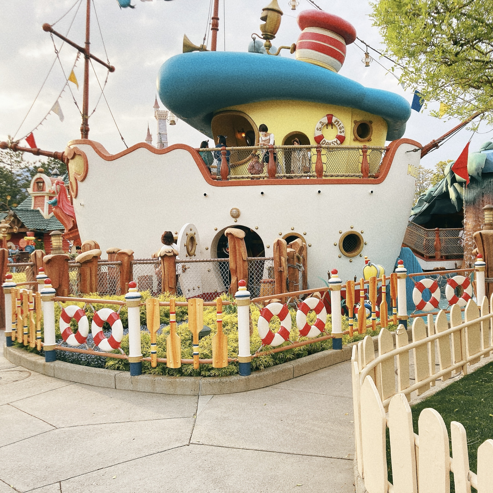

あなたに合った候補者を見つけましょう！
候補者一覧
名前クリックで所信表明に飛べます。

必ず返信の帰ってくる目安箱を作ります！
イベントを募集し、実際に実行します！
皆さんのやりたいことに対して、生徒会が資金を出します！
生徒会出費に関しての調査を行える予算審査委員会を生徒会外に設置します
生徒会長になり、上記4つの公約を達成できなかった場合、坊主にして謝罪します。

磁石祭などのイベントの会場増設
NS高生の虎の開催
交通費申請制度の導入
月に1回の報告会、座談会の実施